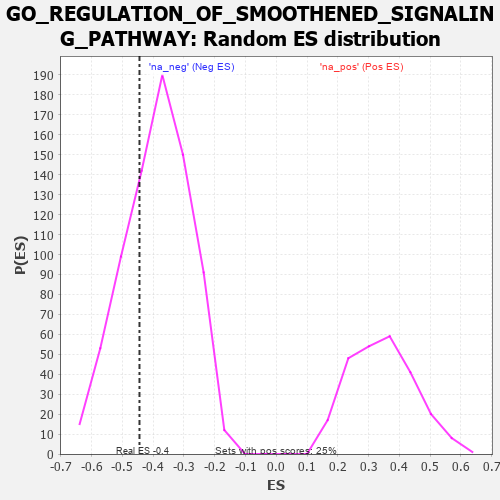

| | | Dataset | 7d |
| Phenotype | NoPhenotypeAvailable |
| Upregulated in class | na_neg |
| GeneSet | GO_REGULATION_OF_SMOOTHENED_SIGNALING_PATHWAY |
| Enrichment Score (ES) | -0.44462347 |
| Normalized Enrichment Score (NES) | -1.1438403 |
| Nominal p-value | 0.29787233 |
| FDR q-value | 0.7068046 |
| FWER p-Value | 1.0 |
Table: GSEA Results Summary
 Fig 1: Enrichment plot: GO_REGULATION_OF_SMOOTHENED_SIGNALING_PATHWAY
Fig 1: Enrichment plot: GO_REGULATION_OF_SMOOTHENED_SIGNALING_PATHWAY
Profile of the Running ES Score & Positions of GeneSet Members on the Rank Ordered List
| PROBE | GENE SYMBOL | GENE_TITLE | RANK IN GENE LIST | RANK METRIC SCORE | RUNNING ES | CORE ENRICHMENT | | 1 | SHOX2 | | | 288 | 0.842 | 0.0335 | No |
| 2 | SUFU | | | 443 | 0.665 | 0.0691 | No |
| 3 | STK36 | | | 1193 | 0.448 | 0.0120 | No |
| 4 | KCTD6 | | | 1213 | 0.444 | 0.0464 | No |
| 5 | RORA | | | 2730 | 0.193 | -0.1283 | No |
| 6 | UCHL5 | | | 2864 | 0.172 | -0.1308 | No |
| 7 | FGFR2 | | | 2895 | 0.167 | -0.1207 | No |
| 8 | RFX4 | | | 3334 | 0.099 | -0.1676 | No |
| 9 | GLI1 | | | 3489 | 0.079 | -0.1804 | No |
| 10 | WDR11 | | | 4262 | -0.052 | -0.2732 | No |
| 11 | DLG5 | | | 4619 | -0.121 | -0.3080 | No |
| 12 | ULK3 | | | 4873 | -0.171 | -0.3257 | No |
| 13 | SMO | | | 5195 | -0.247 | -0.3456 | No |
| 14 | MGRN1 | | | 5250 | -0.257 | -0.3311 | No |
| 15 | ARL6 | | | 5847 | -0.417 | -0.3715 | No |
| 16 | HERC4 | | | 6429 | -0.631 | -0.3924 | Yes |
| 17 | MKS1 | | | 6607 | -0.715 | -0.3555 | Yes |
| 18 | C2CD3 | | | 6783 | -0.802 | -0.3111 | Yes |
| 19 | ARMC9 | | | 6875 | -0.852 | -0.2520 | Yes |
| 20 | IFT81 | | | 7277 | -1.151 | -0.2072 | Yes |
| 21 | GAS8 | | | 7540 | -1.455 | -0.1197 | Yes |
| 22 | DCDC2 | | | 7813 | -2.099 | 0.0199 | Yes |
Table: GSEA details [plain text format]

Fig 2: GO_REGULATION_OF_SMOOTHENED_SIGNALING_PATHWAY: Random ES distribution
Gene set null distribution of ES for GO_REGULATION_OF_SMOOTHENED_SIGNALING_PATHWAY